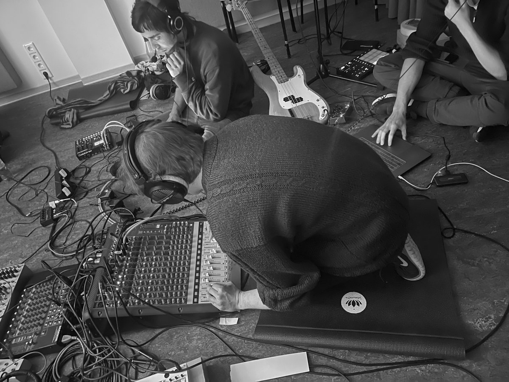

Teaching
A Selection of Courses. From 2019 to 2026 I taught at Bauhaus University Weimar, first as a student tutor, from 2020 through teaching contracts and, from 2022, as an Artistic Associate. My modules focused on radio transmission, soundscapes, field recording, and collaborative audio practices, often situated in public space and shaped by critical, experimental, and postdisciplinary methodologies.
- WS 2026/27Field Recording & Creative RecordingFH JOANNEUM Graz
- SoSe 2026FLURFUNK – Radio als Medium des WiderstandsBauhaus-Universität Weimar
- SoSe 2026Radio TopologiesBauhaus-Universität Weimar
- WiSe 2025/26Klang als antifaschistischer Akteur im (Kunst-)MuseumBauhaus-Universität Weimar
- WiSe 2025/26Thesis, Antithesis, Synthesis: From Listening to ComposingBauhaus-Universität Weimar
- WiSe 2025/26WetlandsBauhaus-Universität Weimar, NKUA Athens, Aalto University
- SoSe 2025Sound and EpistemologyBauhaus-Universität Weimar
- WiSe 2024/25Ekpompe – The Art of Transmission and BroadcastBauhaus-Universität Weimar
- WiSe 2024/25Werkstatt Radiokunst oder das 1mal1 der AudioproduktionBauhaus-Universität Weimar
- SoSe 2024Urban ResonancesBauhaus-Universität Weimar
- SoSe 2024Finishing the Puzzles – vier Eingriffe, bevor es kippt!Bauhaus-Universität Weimar
- WiSe 2023/24Radio Alice: Live Radio PerformanceBauhaus-Universität Weimar
- WiSe 2023/24STEINALT – Do Rocks Listen? / Neuland 10 – SteinaltBauhaus-Universität Weimar, Theater Erfurt
- 2023–2025Absolute Beginners – Introduction to Experimental RadioBauhaus-Universität Weimar
- SoSe 2023EchotopiaBauhaus-Universität Weimar
- WiSe 2022/23Listening to the World – Attuning to ArchivesBauhaus-Universität Weimar
- 2019–2025Audiobaukasten – Introduction to Radio and Audio ProductionBauhaus-Universität Weimar
